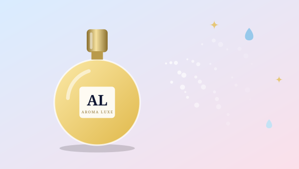
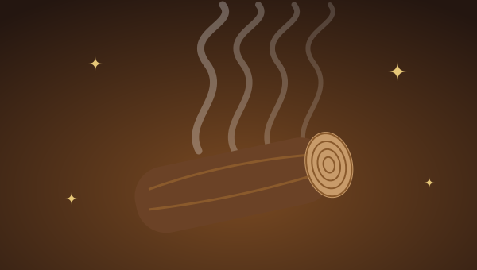
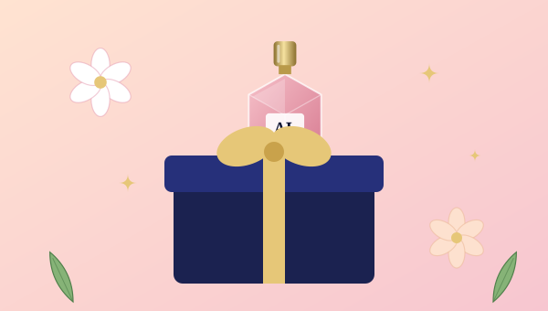

Memilih parfum bukan soal mengikuti tren, melainkan menemukan aroma yang terasa seperti dirimu.
Mulailah dengan memahami struktur parfum: top note adalah kesan pertama yang muncul 5–15 menit
awal, heart note adalah karakter utama yang bertahan beberapa jam, dan base note adalah jejak
akhir yang menetap paling lama.
Orang yang ceria dan aktif biasanya cocok dengan aroma citrus atau fresh. Pribadi yang tenang dan
romantis sering menyukai floral lembut seperti mawar dan peony. Sementara karakter tegas dan
berkelas cenderung nyaman dengan woody atau oriental seperti cedar, amber, dan oud.
Selalu coba parfum di kulit, bukan hanya di kertas tester. Tunggu minimal 30 menit agar aroma
berkembang sebelum memutuskan. Kimia kulit setiap orang berbeda, jadi aroma yang sama bisa
terasa berbeda pada dua orang.

Tips Membuat Aroma Tahan Seharian
Semprot di titik nadi, lembapkan kulit, dan hindari menggosok pergelangan tangan.
Kulit yang kering membuat parfum cepat menguap. Oleskan lotion tanpa aroma atau petroleum jelly
tipis sebelum menyemprotkan parfum agar aroma menempel lebih lama.
Semprotkan pada titik nadi seperti pergelangan tangan, leher, dan belakang telinga. Area ini
hangat sehingga membantu aroma menyebar dengan lembut sepanjang hari.
Hindari menggosokkan kedua pergelangan tangan setelah menyemprot. Gesekan merusak molekul top
note dan membuat aroma cepat pudar. Biarkan mengering secara alami. Simpan parfum di tempat
sejuk dan gelap, jauh dari sinar matahari langsung.

Mengenal Oud: Emas Cair dari Timur
Sejarah dan karakter oud yang menjadikannya bahan paling berharga di dunia parfum.
Oud, atau agarwood, berasal dari pohon Aquilaria yang terinfeksi jamur tertentu. Sebagai respons,
pohon menghasilkan resin gelap yang harum. Prosesnya bisa memakan puluhan tahun, itulah mengapa
oud dijuluki emas cair.
Aromanya kompleks: hangat, berkayu, sedikit manis, dengan sentuhan asap dan kulit. Di Timur
Tengah dan Asia, oud telah dipakai selama ribuan tahun untuk ritual, dupa, dan parfum kelas
atas.
Dalam parfum modern, oud sering dipadukan dengan mawar, saffron, atau vanila agar lebih lembut
dan mudah dinikmati. Cobalah semprot tipis, karena oud berkarakter kuat dan tahan sangat lama.

Panduan Hadiah Parfum untuk Orang Tersayang
Ide hadiah berdasarkan keluarga aroma dan momen spesial.
Memberi parfum adalah hadiah personal yang berkesan. Perhatikan aroma yang biasa dipakai
penerima, lalu pilih yang sefamili namun sedikit berbeda agar terasa baru tetapi tetap cocok.
Untuk pasangan, pilih aroma hangat dan romantis seperti amber atau floral. Untuk sahabat, citrus
atau fresh memberi kesan ceria. Untuk orang tua atau atasan, woody yang klasik dan elegan adalah
pilihan aman.
Jika ragu, pilih set miniatur agar penerima bisa mencoba beberapa aroma. Tambahkan kartu ucapan
tulisan tangan untuk sentuhan akhir yang istimewa.